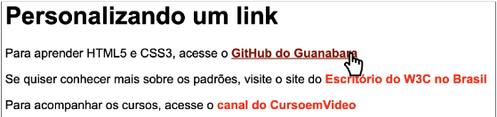

Por padrão os navegadores mostram links que não foram acessados em azul e os que já foram visitados em violeta, além disso todos os links aparecem sublinhados.
Para alterar essa forma de apresentação dos links devemos configurar seu estilo. Para isso, na área <style> coloque os seguintes seletores:
body {
font: normal 1em Arial, Helvetica, sans-serif;
}
a {
font-weight: bold;
text-decoration: none;
color: red;
}
a:visited {
color: darkred;
}
a:hover {
text-decoration: underline;
}
No código acima foram feitas 3 configurações para os links: a primeira (na linha 5) para links não visitados (inéditos), colocando o texto em negrito, removendo o sublinhado e colocanco-os em cor vermelha.
A segunda alteração (linha 11), foi configurado os links já visitados (com a pseudo-classe :visited). Nele apenas mudamos sua cor.
Já na terceira (linha 15) foram feitas alterações em todos os links, dessa forma, quando passar o mouse sobre eles (pseudo-classe :hover) o sublinhado volta a aparecer.
O resultados dessas alterações podem ser vistos abaixo:

Aqui estão alguns exemplos práticos disso: Voltar para a página anterior ou Ir para a próxima página. Se você preferir pode ouvir a música que estou escutando nesse momento
Também podemos fazer algumas configurações relacionadas à classe especial para o terceiro link.
.especial:hover {
color: white;
background-color: black;
text-decoration: none;
}
.especial::before {
content: '>';
font-weight: lighter;
}
.especial::after {
content: '<';
font-weight: lighter;
}
Na primeira linha do código acima, dizemos que o link da classe especial vai ter cor branco, fundo preto e perderá sublinhado quando movermos o mouse sobre ele.
Já nas próximas declarações estamos adicionando símbolos antes e depois do link, usando os pseudo-elementos ::beofre e ::after, respectivamente.
O que resultou nisso:

Mais um exemplo
Mais um exemplo para o uso de pseudo-classes.
<h3>Conteúdo especial</h3>
<div>
Passe o mouse aqui
<p>Quanto mais escuro a noite, mais bonitas são as ESTRELAS!</p>
</div>
<p>Veja o conteúdo oculto aparecendo!</p>
Na segunda linha do código acima, criamos um bloco especial com a tag <div*gt. Uma das grandes vantagens de seu uso é que elas podem ter outras tags em seu interior,
como o parágrafo que criamos dentro dela. Agora vamos dar um estilo para ela:
<style>
div > p {
display: none;
}
div:hover > p {
display: block;
background-color: yellow;
}
</style>
No código acima vimos um símbolo novo, o símbolo ">" serve para idicar os filhos (children) imediatos de um elemento. Nesse exemplo ele diz que o primeiro parágrafo é direct children
da div.
Conteúdo especial
Quanto mais escuro a noite, mais bonitas são as ESTRELAS!
Veja o conteúdo oculto aparecendo!